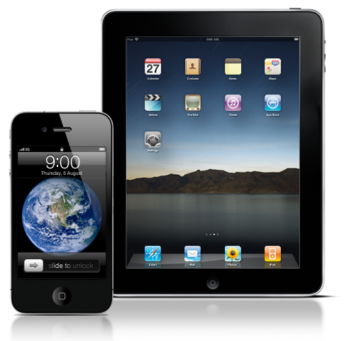

“Every once in a while a revolutionary product comes along that changes everything.
It’s very fortunate if you can work on just one of these in your career... Apple’s been
very fortunate in that it’s introduced a few of these.”
Steve Jobs
The iPhone and iPad have taken the world by storm and almost single-handedly created a new and lucrative market for mobile software applications.
At Shiny we specialize in creating our own apps and helping other developers to turn their ideas into fully functioning apps for these groundbreaking devices.

Take your first steps towards turning your iPhone App idea into reality! Aimed at programmers who are new to the Apple platform, our intensive courses quickly bring you up to speed with the Apple way of creating apps.
Learn how to set up your project, use the interface builder, create views and understand the ways of controlling them. Then enhance your app by adding animations, multi touch features and the in built accelerometer. Finally learn how to deploy your software for beta testing using the Apple provisioning system and then how to submit your finished work to the App Store.
We provide a range of scheduled courses throughout the UK and also provide in house courses specifically tailored to your organisation’s requirements.
Having been down the path many times why not benefit from our long experience as App developers? Ever since the iPhone first appeared, Shiny has been developing innovative apps across a range of fields, building up invaluable knowledge on how to design, program and market applications.
From the start of your project to its completion we can provide ad hoc consultancy and in depth support every step of the way, keeping your development on track and on target.
Here is a selection of some of the publicly available apps we’ve recently developed.